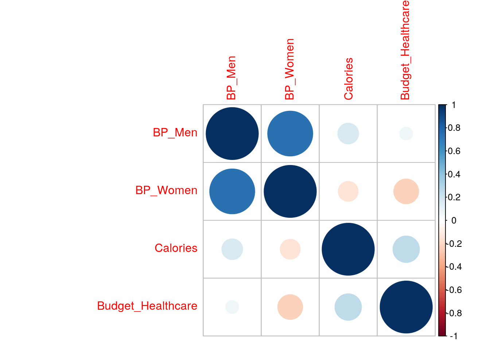
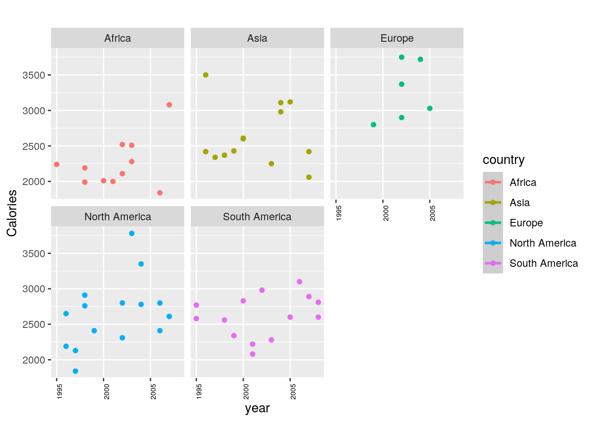
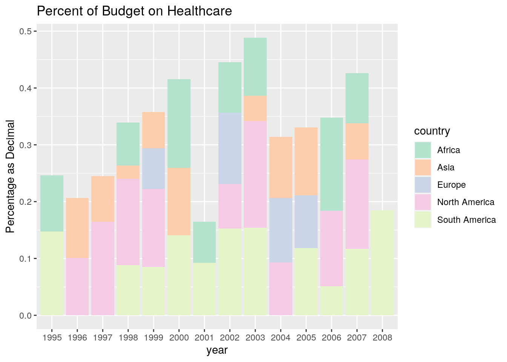
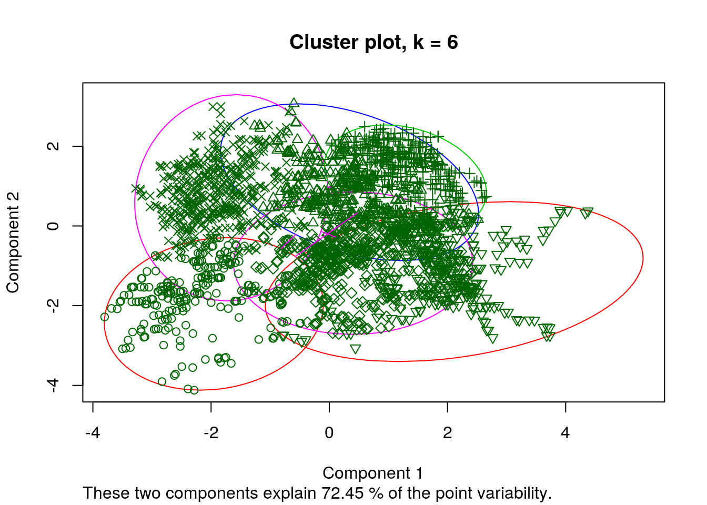
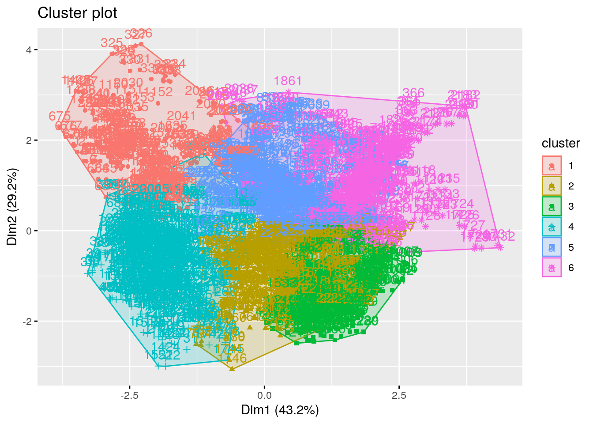
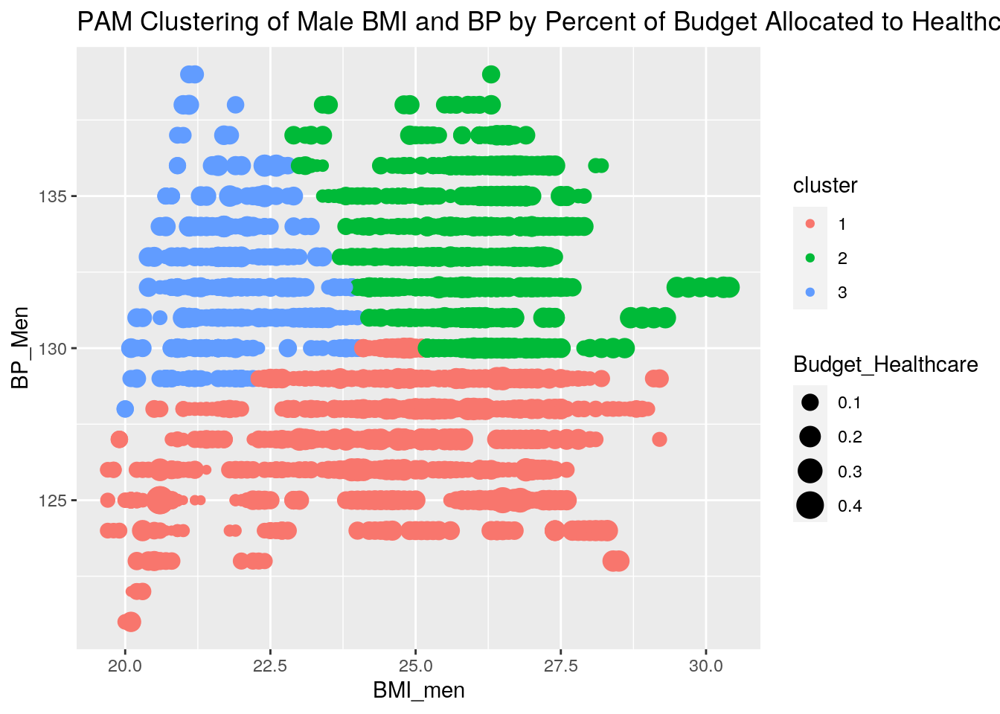

bpm1 <- bpmen %>% pivot_longer(!country, names_to = "year", values_to = "BP_Men")
bpw1 <- bpwomen %>% pivot_longer(!country, names_to = "year", values_to = "BP_Women")
bmiw <- bmiwomen %>% pivot_longer(!country, names_to = "year", values_to = "BMI_women")
bmim <- bmimen %>% pivot_longer(!country, names_to = "year", values_to = "BMI_men")
kcal <- calories %>% pivot_longer(!country, names_to = "year", values_to = "Calories")
spending <- money %>% pivot_longer(!country, names_to = "year", values_to = "Budget_Healthcare")c1 <- full_join(bmim, bmiw) ## Joining, by = c("country", "year")c2 <- full_join(c1, bpm1)## Joining, by = c("country", "year")c3 <- full_join(c2, bpw1)## Joining, by = c("country", "year")c4 <- full_join(c3, kcal)## Joining, by = c("country", "year")healthy <- full_join(c4, spending)## Joining, by = c("country", "year")head(healthy)## # A tibble: 6 x 8
## country year BMI_men BMI_women BP_Men BP_Women Calories Budget_Healthcare
## <chr> <chr> <dbl> <dbl> <dbl> <dbl> <dbl> <dbl>
## 1 Afghanistan 1980 21.5 20.4 125 122 2480 NA
## 2 Afghanistan 1981 21.5 20.5 125 122 2480 NA
## 3 Afghanistan 1982 21.4 20.5 125 123 2480 NA
## 4 Afghanistan 1983 21.4 20.6 125 123 2520 NA
## 5 Afghanistan 1984 21.4 20.6 125 123 2450 NA
## 6 Afghanistan 1985 21.4 20.6 125 123 2400 NAhealthy %>% select(country, BP_Men) %>% arrange(BP_Men > 120)## # A tibble: 9,601 x 2
## country BP_Men
## <chr> <dbl>
## 1 Cambodia 119
## 2 Cambodia 119
## 3 Cambodia 119
## 4 Cambodia 119
## 5 Cambodia 119
## 6 Cambodia 119
## 7 Cambodia 120
## 8 Cambodia 120
## 9 Cambodia 120
## 10 Cambodia 120
## # … with 9,591 more rowshealthy %>% select(country, BP_Men) %>% arrange(BP_Men < 120)## # A tibble: 9,601 x 2
## country BP_Men
## <chr> <dbl>
## 1 Afghanistan 125
## 2 Afghanistan 125
## 3 Afghanistan 125
## 4 Afghanistan 125
## 5 Afghanistan 125
## 6 Afghanistan 125
## 7 Afghanistan 125
## 8 Afghanistan 125
## 9 Afghanistan 125
## 10 Afghanistan 125
## # … with 9,591 more rowsnorthamerica <- healthy %>% filter(country == c("Antigua and Barbuda", "Bahamas", "Bermuda", "Belize", "Canada", "Costa Rica", "Cuba", "Dominica", "Dominican Republic", "El Salvador", "Grenada", "Guatemala", "Haiti", "Honduras", "Jamaica", "Mexico", "Nicaragua", "Panama","St. Kitts and Nevis ", "St. Lucia", "St. Vincent and the Grenadines", "Trinidad and Tobago", "United States")) %>% mutate(country = "North America")## Warning in country == c("Antigua and Barbuda", "Bahamas", "Bermuda", "Belize", :
## longer object length is not a multiple of shorter object lengthsouthamerica <- healthy %>% filter(country == c("Equatorial Guinea", "Argentina", "Ecuador", "Bolivia", "Brazil", "Chile", "Colombia", "Guyana", "Paraguay", "Peru", "Suriname", "Uruguay", "Venezuela")) %>% mutate(country = "South America") ## Warning in country == c("Equatorial Guinea", "Argentina", "Ecuador",
## "Bolivia", : longer object length is not a multiple of shorter object lengtheurope <- healthy %>% filter(country == c("Albania", "Andorra", "Armenia", "Austria", "Azerbaijan", "Belarus", "Belgium", "Bosnia and Herzegovina", "Bulgaria", "Croatia", "Cyprus", "Czechia", "Denmark", "Estonia", "Finland", "France", "Georgia", "Germany", "Greece", "Hungary", "Ireland", "Iceland", "Italy", "Kazakhstan", "Kosovo", "Latvia", "Liechtenstein", "Lithuania", "Luxembourg", "Malta", "Moldova", "Monaco", "Montenegro", "Netherlands", "North Macedonia", "Norway", "Portugal", "Poland", "San Marino", "Serbia", "Slovakia", "Slovenia", "Spain", "Sweeden", "Switzerland", "Turkey", "Ukrain", "United Kingdom")) %>% mutate(country = "Europe")## Warning in country == c("Albania", "Andorra", "Armenia", "Austria",
## "Azerbaijan", : longer object length is not a multiple of shorter object lengthafrica <- healthy %>% filter(country ==c("Algeria", "Angola Benin", "Botswana", "Burkina Faso", "Benin", "Cameroon", "Central African Republic", "Chad", "Comoros", "Congo", "Cote d'Ivoire", "Congo, Rep.", "Djibouti", "Egypt", "Eswatini", "Ethiopia", "Gabon", "Gambia", "Ghana", "Guinea","Guinea-Bissau", "Kenya", "Lesotho", "Liberia", "Madagascar", "Malawi", "Mali", "Mauritania", "Mauritius", "Morocco", "Namibia", "Niger", "Nigeria", "Rwanda", "Sao Tome and Principe", "Senegal","Sierra Leone", "Somalia", "South Africa", "Sudan", "Tanzania", "Togo", "Tunisia", "Uganda", "Zambia","Zimbabwe", "Mozambique")) %>% mutate(country = "Africa")## Warning in country == c("Algeria", "Angola Benin", "Botswana", "Burkina Faso", :
## longer object length is not a multiple of shorter object lengthasia <- healthy %>% filter(country == c("Afghanistan", "Armenia", "Azerbaijan", "Bahrain", "Bangladesh", "Bhutan", "Brunei", "Cambodia",
"China", "Cyprus", "Georgia", "India", "Indonesia", "Iran", "Iraq", "Israel", "Japan", "Jordan", "Kazakhstan", "Kuwait", "Kyrgyzstan", "Laos", "Lebanon", "Malaysia", "Maldives", "Mongolia", "Myanmar", "Nepal", "North Korea", "Oman", "Pakistan", "Palestine",
"Philippines", "Qatar", "Russia", "Saudi Arabia", "Singapore", "South Korea", "Sri Lanka", "Syria", "Taiwan", "Tajikistan", "Thailand",
"Timor-Leste", "Turkey", "Turkmenistan", "United Arab Emirates", "Uzbekistan", "Vietnam", "Yemen")) %>% mutate(country = "Asia")## Warning in country == c("Afghanistan", "Armenia", "Azerbaijan", "Bahrain", :
## longer object length is not a multiple of shorter object lengthc1 <- full_join(europe, southamerica)## Joining, by = c("country", "year", "BMI_men", "BMI_women", "BP_Men", "BP_Women", "Calories", "Budget_Healthcare")c2 <- full_join(c1, northamerica)## Joining, by = c("country", "year", "BMI_men", "BMI_women", "BP_Men", "BP_Women", "Calories", "Budget_Healthcare")c3 <- full_join(c2, africa)## Joining, by = c("country", "year", "BMI_men", "BMI_women", "BP_Men", "BP_Women", "Calories", "Budget_Healthcare")countries <- full_join(c3,asia)## Joining, by = c("country", "year", "BMI_men", "BMI_women", "BP_Men", "BP_Women", "Calories", "Budget_Healthcare")head(countries)## # A tibble: 6 x 8
## country year BMI_men BMI_women BP_Men BP_Women Calories Budget_Healthcare
## <chr> <chr> <dbl> <dbl> <dbl> <dbl> <dbl> <dbl>
## 1 Europe 1999 25.5 25.1 132 129 2800 0.0718
## 2 Europe 1990 26.1 25.8 136 131 NA NA
## 3 Europe 1982 24.6 26.3 135 132 NA NA
## 4 Europe 1982 24.9 26.2 138 134 NA NA
## 5 Europe 2002 26.3 25.1 131 125 3750 0.126
## 6 Europe 2002 25.8 26 132 133 2900 0.106healthy %>% group_by(country, year, Calories) %>% mutate(Calories = Calories/2000)## # A tibble: 9,601 x 8
## # Groups: country, year, Calories [9,601]
## country year BMI_men BMI_women BP_Men BP_Women Calories Budget_Healthca…
## <chr> <chr> <dbl> <dbl> <dbl> <dbl> <dbl> <dbl>
## 1 Afghanistan 1980 21.5 20.4 125 122 1.24 NA
## 2 Afghanistan 1981 21.5 20.5 125 122 1.24 NA
## 3 Afghanistan 1982 21.4 20.5 125 123 1.24 NA
## 4 Afghanistan 1983 21.4 20.6 125 123 1.26 NA
## 5 Afghanistan 1984 21.4 20.6 125 123 1.23 NA
## 6 Afghanistan 1985 21.4 20.6 125 123 1.2 NA
## 7 Afghanistan 1986 21.4 20.7 125 123 1.2 NA
## 8 Afghanistan 1987 21.4 20.7 125 123 1.36 NA
## 9 Afghanistan 1988 21.3 20.7 125 124 1.26 NA
## 10 Afghanistan 1989 21.3 20.7 125 124 1.23 NA
## # … with 9,591 more rowshealthy <- healthy %>% drop_na()
countries <- countries %>% drop_na()
healthy %>% group_by(country, BP_Men, BP_Women, BMI_men, BMI_women, Calories, Budget_Healthcare) %>% summarize(n(), .groups="drop")## # A tibble: 2,287 x 8
## country BP_Men BP_Women BMI_men BMI_women Calories Budget_Healthca… `n()`
## <chr> <dbl> <dbl> <dbl> <dbl> <dbl> <dbl> <int>
## 1 Afghanistan 125 124 20.6 20.6 1830 0.0148 1
## 2 Afghanistan 125 124 20.6 20.7 1890 0.0148 1
## 3 Afghanistan 125 125 20.6 20.8 1950 0.0148 1
## 4 Afghanistan 125 125 20.6 20.8 1970 0.0148 1
## 5 Afghanistan 125 125 20.6 20.9 1970 0.0148 1
## 6 Afghanistan 126 125 20.6 21 2050 0.0148 1
## 7 Afghanistan 126 125 20.6 21.1 2040 0.0148 1
## 8 Albania 132 129 25.3 24.9 2720 0.0526 1
## 9 Albania 132 129 25.3 25 2730 0.0647 1
## 10 Albania 132 129 25.3 25 2840 0.0634 1
## # … with 2,277 more rowshealthy %>% group_by(country) %>% summarize(mean(Calories, na.rm = TRUE),.groups="drop")## # A tibble: 167 x 2
## country `mean(Calories, na.rm = TRUE)`
## <chr> <dbl>
## 1 Afghanistan 1957.
## 2 Albania 2808.
## 3 Algeria 2901.
## 4 Angola 1920
## 5 Antigua and Barbuda 2199.
## 6 Argentina 3136.
## 7 Armenia 2451.
## 8 Australia 3089.
## 9 Austria 3641.
## 10 Azerbaijan 2491.
## # … with 157 more rowshealthy %>% group_by(country) %>% summarize(mean(BP_Men, na.rm = TRUE),.groups="drop")## # A tibble: 167 x 2
## country `mean(BP_Men, na.rm = TRUE)`
## <chr> <dbl>
## 1 Afghanistan 125.
## 2 Albania 133.
## 3 Algeria 129.
## 4 Angola 133.
## 5 Antigua and Barbuda 132.
## 6 Argentina 127.
## 7 Armenia 134.
## 8 Australia 130.
## 9 Austria 133.
## 10 Azerbaijan 132.
## # … with 157 more rowshealthy %>% group_by(country) %>% summarize(mean(BP_Women, na.rm = TRUE),.groups="drop") ## # A tibble: 167 x 2
## country `mean(BP_Women, na.rm = TRUE)`
## <chr> <dbl>
## 1 Afghanistan 125.
## 2 Albania 129
## 3 Algeria 130.
## 4 Angola 130
## 5 Antigua and Barbuda 125.
## 6 Argentina 120.
## 7 Armenia 133
## 8 Australia 121.
## 9 Austria 126.
## 10 Azerbaijan 129
## # … with 157 more rowshealthy %>% group_by(country) %>% summarize(mean(BMI_men, na.rm = TRUE),.groups="drop")## # A tibble: 167 x 2
## country `mean(BMI_men, na.rm = TRUE)`
## <chr> <dbl>
## 1 Afghanistan 20.6
## 2 Albania 25.8
## 3 Algeria 24.0
## 4 Angola 21.6
## 5 Antigua and Barbuda 25.1
## 6 Argentina 27.0
## 7 Armenia 24.5
## 8 Australia 26.9
## 9 Austria 26
## 10 Azerbaijan 24.8
## # … with 157 more rowshealthy %>% group_by(country) %>% summarize(mean(BMI_women, na.rm = TRUE),.groups="drop")## # A tibble: 167 x 2
## country `mean(BMI_women, na.rm = TRUE)`
## <chr> <dbl>
## 1 Afghanistan 20.8
## 2 Albania 25.3
## 3 Algeria 25.7
## 4 Angola 22.2
## 5 Antigua and Barbuda 26.8
## 6 Argentina 26.6
## 7 Armenia 26.4
## 8 Australia 26.2
## 9 Austria 24.8
## 10 Azerbaijan 26.7
## # … with 157 more rowshealthy %>% group_by(country) %>% summarize(mean(Budget_Healthcare, na.rm = TRUE),.groups="drop") ## # A tibble: 167 x 2
## country `mean(Budget_Healthcare, na.rm = TRUE)`
## <chr> <dbl>
## 1 Afghanistan 0.0148
## 2 Albania 0.0752
## 3 Algeria 0.0895
## 4 Angola 0.0434
## 5 Antigua and Barbuda 0.107
## 6 Argentina 0.147
## 7 Armenia 0.0702
## 8 Australia 0.156
## 9 Austria 0.146
## 10 Azerbaijan 0.0553
## # … with 157 more rowshealthy %>% group_by(country) %>% summarize(sd(Calories, na.rm = TRUE),.groups="drop")## # A tibble: 167 x 2
## country `sd(Calories, na.rm = TRUE)`
## <chr> <dbl>
## 1 Afghanistan 78.0
## 2 Albania 68.5
## 3 Algeria 111.
## 4 Angola 185.
## 5 Antigua and Barbuda 115.
## 6 Argentina 85.1
## 7 Armenia 225.
## 8 Australia 64.6
## 9 Austria 83.3
## 10 Azerbaijan 362.
## # … with 157 more rowshealthy %>% group_by(country) %>% summarize(sd(BP_Men, na.rm = TRUE),.groups="drop")## # A tibble: 167 x 2
## country `sd(BP_Men, na.rm = TRUE)`
## <chr> <dbl>
## 1 Afghanistan 0.488
## 2 Albania 0.745
## 3 Algeria 0.514
## 4 Angola 0.535
## 5 Antigua and Barbuda 0.949
## 6 Argentina 0.611
## 7 Armenia 0.469
## 8 Australia 1.64
## 9 Austria 0.929
## 10 Azerbaijan 0.519
## # … with 157 more rowshealthy %>% group_by(country) %>% summarize(sd(BP_Women, na.rm = TRUE),.groups="drop") ## # A tibble: 167 x 2
## country `sd(BP_Women, na.rm = TRUE)`
## <chr> <dbl>
## 1 Afghanistan 0.488
## 2 Albania 0
## 3 Algeria 0.514
## 4 Angola 0
## 5 Antigua and Barbuda 0.267
## 6 Argentina 0.699
## 7 Armenia 0
## 8 Australia 2.13
## 9 Austria 1.53
## 10 Azerbaijan 0.392
## # … with 157 more rowshealthy %>% group_by(country) %>% summarize(sd(BMI_men, na.rm = TRUE),.groups="drop")## # A tibble: 167 x 2
## country `sd(BMI_men, na.rm = TRUE)`
## <chr> <dbl>
## 1 Afghanistan 0
## 2 Albania 0.387
## 3 Algeria 0.398
## 4 Angola 0.352
## 5 Antigua and Barbuda 0.341
## 6 Argentina 0.334
## 7 Armenia 0.468
## 8 Australia 0.417
## 9 Austria 0.277
## 10 Azerbaijan 0.388
## # … with 157 more rowshealthy %>% group_by(country) %>% summarize(sd(BMI_women, na.rm = TRUE),.groups="drop") ## # A tibble: 167 x 2
## country `sd(BMI_women, na.rm = TRUE)`
## <chr> <dbl>
## 1 Afghanistan 0.172
## 2 Albania 0.253
## 3 Algeria 0.430
## 4 Angola 0.714
## 5 Antigua and Barbuda 0.413
## 6 Argentina 0.563
## 7 Armenia 0.427
## 8 Australia 0.464
## 9 Austria 0.189
## 10 Azerbaijan 0.426
## # … with 157 more rowshealthy %>% group_by(country) %>% summarize(sd(Budget_Healthcare, na.rm = TRUE),.groups="drop") ## # A tibble: 167 x 2
## country `sd(Budget_Healthcare, na.rm = TRUE)`
## <chr> <dbl>
## 1 Afghanistan 0
## 2 Albania 0.0130
## 3 Algeria 0.00816
## 4 Angola 0.0141
## 5 Antigua and Barbuda 0.0137
## 6 Argentina 0.00509
## 7 Armenia 0.00945
## 8 Australia 0.0127
## 9 Austria 0.0116
## 10 Azerbaijan 0.0127
## # … with 157 more rowshealthy %>% group_by(country) %>% summarize(var(Calories, na.rm = TRUE),.groups="drop")## # A tibble: 167 x 2
## country `var(Calories, na.rm = TRUE)`
## <chr> <dbl>
## 1 Afghanistan 6090.
## 2 Albania 4695.
## 3 Algeria 12413.
## 4 Angola 34138.
## 5 Antigua and Barbuda 13284.
## 6 Argentina 7242.
## 7 Armenia 50607.
## 8 Australia 4167.
## 9 Austria 6936.
## 10 Azerbaijan 130859.
## # … with 157 more rowshealthy %>% group_by(country) %>% summarize(var(BP_Men, na.rm = TRUE),.groups="drop")## # A tibble: 167 x 2
## country `var(BP_Men, na.rm = TRUE)`
## <chr> <dbl>
## 1 Afghanistan 0.238
## 2 Albania 0.555
## 3 Algeria 0.264
## 4 Angola 0.286
## 5 Antigua and Barbuda 0.901
## 6 Argentina 0.374
## 7 Armenia 0.220
## 8 Australia 2.69
## 9 Austria 0.863
## 10 Azerbaijan 0.269
## # … with 157 more rowshealthy %>% group_by(country) %>% summarize(var(BP_Women, na.rm = TRUE),.groups="drop") ## # A tibble: 167 x 2
## country `var(BP_Women, na.rm = TRUE)`
## <chr> <dbl>
## 1 Afghanistan 0.238
## 2 Albania 0
## 3 Algeria 0.264
## 4 Angola 0
## 5 Antigua and Barbuda 0.0714
## 6 Argentina 0.489
## 7 Armenia 0
## 8 Australia 4.53
## 9 Austria 2.34
## 10 Azerbaijan 0.154
## # … with 157 more rowshealthy %>% group_by(country) %>% summarize(var(BMI_men, na.rm = TRUE),.groups="drop")## # A tibble: 167 x 2
## country `var(BMI_men, na.rm = TRUE)`
## <chr> <dbl>
## 1 Afghanistan 0
## 2 Albania 0.150
## 3 Algeria 0.158
## 4 Angola 0.124
## 5 Antigua and Barbuda 0.116
## 6 Argentina 0.112
## 7 Armenia 0.219
## 8 Australia 0.174
## 9 Austria 0.0769
## 10 Azerbaijan 0.150
## # … with 157 more rowshealthy %>% group_by(country) %>% summarize(var(BMI_women, na.rm = TRUE),.groups="drop") ## # A tibble: 167 x 2
## country `var(BMI_women, na.rm = TRUE)`
## <chr> <dbl>
## 1 Afghanistan 0.0295
## 2 Albania 0.0642
## 3 Algeria 0.185
## 4 Angola 0.510
## 5 Antigua and Barbuda 0.171
## 6 Argentina 0.317
## 7 Armenia 0.182
## 8 Australia 0.215
## 9 Austria 0.0357
## 10 Azerbaijan 0.181
## # … with 157 more rowshealthy %>% group_by(country) %>% summarize(var(Budget_Healthcare, na.rm = TRUE),.groups="drop") ## # A tibble: 167 x 2
## country `var(Budget_Healthcare, na.rm = TRUE)`
## <chr> <dbl>
## 1 Afghanistan 0
## 2 Albania 0.000168
## 3 Algeria 0.0000666
## 4 Angola 0.000199
## 5 Antigua and Barbuda 0.000189
## 6 Argentina 0.0000259
## 7 Armenia 0.0000893
## 8 Australia 0.000162
## 9 Austria 0.000135
## 10 Azerbaijan 0.000162
## # … with 157 more rowshealthy %>% group_by(country) %>% summarize(min(Calories, na.rm = TRUE),.groups="drop")## # A tibble: 167 x 2
## country `min(Calories, na.rm = TRUE)`
## <chr> <dbl>
## 1 Afghanistan 1830
## 2 Albania 2720
## 3 Algeria 2730
## 4 Angola 1690
## 5 Antigua and Barbuda 2070
## 6 Argentina 2980
## 7 Armenia 2240
## 8 Australia 2990
## 9 Austria 3490
## 10 Azerbaijan 2020
## # … with 157 more rowshealthy %>% group_by(country) %>% summarize(min(BP_Men, na.rm = TRUE),.groups="drop")## # A tibble: 167 x 2
## country `min(BP_Men, na.rm = TRUE)`
## <chr> <dbl>
## 1 Afghanistan 125
## 2 Albania 132
## 3 Algeria 129
## 4 Angola 132
## 5 Antigua and Barbuda 131
## 6 Argentina 127
## 7 Armenia 134
## 8 Australia 127
## 9 Austria 131
## 10 Azerbaijan 131
## # … with 157 more rowshealthy %>% group_by(country) %>% summarize(min(BP_Women, na.rm = TRUE),.groups="drop") ## # A tibble: 167 x 2
## country `min(BP_Women, na.rm = TRUE)`
## <chr> <dbl>
## 1 Afghanistan 124
## 2 Albania 129
## 3 Algeria 130
## 4 Angola 130
## 5 Antigua and Barbuda 125
## 6 Argentina 119
## 7 Armenia 133
## 8 Australia 117
## 9 Austria 124
## 10 Azerbaijan 128
## # … with 157 more rowshealthy %>% group_by(country) %>% summarize(min(BMI_men, na.rm = TRUE),.groups="drop")## # A tibble: 167 x 2
## country `min(BMI_men, na.rm = TRUE)`
## <chr> <dbl>
## 1 Afghanistan 20.6
## 2 Albania 25.3
## 3 Algeria 23.4
## 4 Angola 21.2
## 5 Antigua and Barbuda 24.7
## 6 Argentina 26.4
## 7 Armenia 24
## 8 Australia 26.3
## 9 Austria 25.6
## 10 Azerbaijan 24.5
## # … with 157 more rowshealthy %>% group_by(country) %>% summarize(min(BMI_women, na.rm = TRUE),.groups="drop") ## # A tibble: 167 x 2
## country `min(BMI_women, na.rm = TRUE)`
## <chr> <dbl>
## 1 Afghanistan 20.6
## 2 Albania 24.9
## 3 Algeria 25.1
## 4 Angola 21.3
## 5 Antigua and Barbuda 26.2
## 6 Argentina 25.7
## 7 Armenia 25.9
## 8 Australia 25.5
## 9 Austria 24.5
## 10 Azerbaijan 26.3
## # … with 157 more rowshealthy %>% group_by(country) %>% summarize(min(Budget_Healthcare, na.rm = TRUE),.groups="drop") ## # A tibble: 167 x 2
## country `min(Budget_Healthcare, na.rm = TRUE)`
## <chr> <dbl>
## 1 Afghanistan 0.0148
## 2 Albania 0.0526
## 3 Algeria 0.078
## 4 Angola 0.0176
## 5 Antigua and Barbuda 0.0875
## 6 Argentina 0.138
## 7 Armenia 0.0461
## 8 Australia 0.131
## 9 Austria 0.124
## 10 Azerbaijan 0.031
## # … with 157 more rowshealthy %>% group_by(country) %>% summarize(max(Calories, na.rm = TRUE),.groups="drop")## # A tibble: 167 x 2
## country `max(Calories, na.rm = TRUE)`
## <chr> <dbl>
## 1 Afghanistan 2050
## 2 Albania 2950
## 3 Algeria 3050
## 4 Angola 2250
## 5 Antigua and Barbuda 2410
## 6 Argentina 3270
## 7 Armenia 2870
## 8 Australia 3200
## 9 Austria 3740
## 10 Azerbaijan 3030
## # … with 157 more rowshealthy %>% group_by(country) %>% summarize(max(BP_Men, na.rm = TRUE),.groups="drop")## # A tibble: 167 x 2
## country `max(BP_Men, na.rm = TRUE)`
## <chr> <dbl>
## 1 Afghanistan 126
## 2 Albania 134
## 3 Algeria 130
## 4 Angola 134
## 5 Antigua and Barbuda 134
## 6 Argentina 129
## 7 Armenia 135
## 8 Australia 132
## 9 Austria 134
## 10 Azerbaijan 132
## # … with 157 more rowshealthy %>% group_by(country) %>% summarize(max(BP_Women, na.rm = TRUE),.groups="drop") ## # A tibble: 167 x 2
## country `max(BP_Women, na.rm = TRUE)`
## <chr> <dbl>
## 1 Afghanistan 125
## 2 Albania 129
## 3 Algeria 131
## 4 Angola 130
## 5 Antigua and Barbuda 126
## 6 Argentina 121
## 7 Armenia 133
## 8 Australia 124
## 9 Austria 129
## 10 Azerbaijan 130
## # … with 157 more rowshealthy %>% group_by(country) %>% summarize(max(BMI_men, na.rm = TRUE),.groups="drop")## # A tibble: 167 x 2
## country `max(BMI_men, na.rm = TRUE)`
## <chr> <dbl>
## 1 Afghanistan 20.6
## 2 Albania 26.4
## 3 Algeria 24.6
## 4 Angola 22.3
## 5 Antigua and Barbuda 25.8
## 6 Argentina 27.5
## 7 Armenia 25.4
## 8 Australia 27.6
## 9 Austria 26.5
## 10 Azerbaijan 25.6
## # … with 157 more rowshealthy %>% group_by(country) %>% summarize(max(BMI_women, na.rm = TRUE),.groups="drop") ## # A tibble: 167 x 2
## country `max(BMI_women, na.rm = TRUE)`
## <chr> <dbl>
## 1 Afghanistan 21.1
## 2 Albania 25.7
## 3 Algeria 26.4
## 4 Angola 23.5
## 5 Antigua and Barbuda 27.5
## 6 Argentina 27.5
## 7 Armenia 27.1
## 8 Australia 26.9
## 9 Austria 25.1
## 10 Azerbaijan 27.5
## # … with 157 more rowshealthy %>% group_by(country) %>% summarize(max(Budget_Healthcare, na.rm = TRUE),.groups="drop") ## # A tibble: 167 x 2
## country `max(Budget_Healthcare, na.rm = TRUE)`
## <chr> <dbl>
## 1 Afghanistan 0.0148
## 2 Albania 0.0979
## 3 Algeria 0.101
## 4 Angola 0.064
## 5 Antigua and Barbuda 0.129
## 6 Argentina 0.153
## 7 Armenia 0.0844
## 8 Australia 0.172
## 9 Austria 0.162
## 10 Azerbaijan 0.0843
## # … with 157 more rowshealthy %>% group_by(country) %>% summarize(n_distinct(Calories, na.rm = TRUE),.groups="drop")## # A tibble: 167 x 2
## country `n_distinct(Calories, na.rm = TRUE)`
## <chr> <int>
## 1 Afghanistan 6
## 2 Albania 9
## 3 Algeria 12
## 4 Angola 13
## 5 Antigua and Barbuda 9
## 6 Argentina 10
## 7 Armenia 11
## 8 Australia 8
## 9 Austria 10
## 10 Azerbaijan 14
## # … with 157 more rowshealthy %>% group_by(country) %>% summarize(n_distinct(BP_Men, na.rm = TRUE),.groups="drop")## # A tibble: 167 x 2
## country `n_distinct(BP_Men, na.rm = TRUE)`
## <chr> <int>
## 1 Afghanistan 2
## 2 Albania 3
## 3 Algeria 2
## 4 Angola 3
## 5 Antigua and Barbuda 4
## 6 Argentina 3
## 7 Armenia 2
## 8 Australia 6
## 9 Austria 4
## 10 Azerbaijan 2
## # … with 157 more rowshealthy %>% group_by(country) %>% summarize(n_distinct(BP_Women, na.rm = TRUE),.groups="drop") ## # A tibble: 167 x 2
## country `n_distinct(BP_Women, na.rm = TRUE)`
## <chr> <int>
## 1 Afghanistan 2
## 2 Albania 1
## 3 Algeria 2
## 4 Angola 1
## 5 Antigua and Barbuda 2
## 6 Argentina 3
## 7 Armenia 1
## 8 Australia 8
## 9 Austria 6
## 10 Azerbaijan 3
## # … with 157 more rowshealthy %>% group_by(country) %>% summarize(n_distinct(BMI_men, na.rm = TRUE),.groups="drop")## # A tibble: 167 x 2
## country `n_distinct(BMI_men, na.rm = TRUE)`
## <chr> <int>
## 1 Afghanistan 1
## 2 Albania 12
## 3 Algeria 12
## 4 Angola 10
## 5 Antigua and Barbuda 11
## 6 Argentina 12
## 7 Armenia 11
## 8 Australia 13
## 9 Austria 10
## 10 Azerbaijan 9
## # … with 157 more rowshealthy %>% group_by(country) %>% summarize(n_distinct(BMI_women, na.rm = TRUE),.groups="drop") ## # A tibble: 167 x 2
## country `n_distinct(BMI_women, na.rm = TRUE)`
## <chr> <int>
## 1 Afghanistan 6
## 2 Albania 9
## 3 Algeria 13
## 4 Angola 14
## 5 Antigua and Barbuda 13
## 6 Argentina 14
## 7 Armenia 11
## 8 Australia 14
## 9 Austria 7
## 10 Azerbaijan 9
## # … with 157 more rowshealthy %>% group_by(country) %>% summarize(n_distinct(Budget_Healthcare, na.rm = TRUE),.groups="drop") ## # A tibble: 167 x 2
## country `n_distinct(Budget_Healthcare, na.rm = TRUE)`
## <chr> <int>
## 1 Afghanistan 1
## 2 Albania 14
## 3 Algeria 14
## 4 Angola 13
## 5 Antigua and Barbuda 12
## 6 Argentina 11
## 7 Armenia 13
## 8 Australia 11
## 9 Austria 12
## 10 Azerbaijan 13
## # … with 157 more rowshealthy %>% group_by(country) %>% summarize(cor = cor(Calories, Budget_Healthcare),.groups = "drop", use = "complete.obs")## Warning in cor(Calories, Budget_Healthcare): the standard deviation is zero
## Warning in cor(Calories, Budget_Healthcare): the standard deviation is zero## # A tibble: 167 x 3
## country cor use
## <chr> <dbl> <chr>
## 1 Afghanistan NA complete.obs
## 2 Albania 0.622 complete.obs
## 3 Algeria -0.883 complete.obs
## 4 Angola 0.641 complete.obs
## 5 Antigua and Barbuda -0.192 complete.obs
## 6 Argentina -0.214 complete.obs
## 7 Armenia 0.0886 complete.obs
## 8 Australia 0.466 complete.obs
## 9 Austria 0.778 complete.obs
## 10 Azerbaijan -0.755 complete.obs
## # … with 157 more rowshealthy %>% group_by(country) %>% summarize(cor = cor(BMI_men, BP_Men),.groups = "drop", use = "complete.obs")## Warning in cor(BMI_men, BP_Men): the standard deviation is zero## Warning in cor(BMI_men, BP_Men): the standard deviation is zero
## Warning in cor(BMI_men, BP_Men): the standard deviation is zero
## Warning in cor(BMI_men, BP_Men): the standard deviation is zero
## Warning in cor(BMI_men, BP_Men): the standard deviation is zero
## Warning in cor(BMI_men, BP_Men): the standard deviation is zero## # A tibble: 167 x 3
## country cor use
## <chr> <dbl> <chr>
## 1 Afghanistan NA complete.obs
## 2 Albania 0.922 complete.obs
## 3 Algeria 0.888 complete.obs
## 4 Angola 0.584 complete.obs
## 5 Antigua and Barbuda 0.946 complete.obs
## 6 Argentina 0.694 complete.obs
## 7 Armenia 0.881 complete.obs
## 8 Australia -0.978 complete.obs
## 9 Austria -0.926 complete.obs
## 10 Azerbaijan 0.516 complete.obs
## # … with 157 more rowshealthy %>% group_by(country) %>% summarize(cor = cor(BMI_women, BP_Women),.groups = "drop", use = "complete.obs")## Warning in cor(BMI_women, BP_Women): the standard deviation is zero## Warning in cor(BMI_women, BP_Women): the standard deviation is zero
## Warning in cor(BMI_women, BP_Women): the standard deviation is zero
## Warning in cor(BMI_women, BP_Women): the standard deviation is zero
## Warning in cor(BMI_women, BP_Women): the standard deviation is zero
## Warning in cor(BMI_women, BP_Women): the standard deviation is zero
## Warning in cor(BMI_women, BP_Women): the standard deviation is zero
## Warning in cor(BMI_women, BP_Women): the standard deviation is zero
## Warning in cor(BMI_women, BP_Women): the standard deviation is zero
## Warning in cor(BMI_women, BP_Women): the standard deviation is zero
## Warning in cor(BMI_women, BP_Women): the standard deviation is zero
## Warning in cor(BMI_women, BP_Women): the standard deviation is zero
## Warning in cor(BMI_women, BP_Women): the standard deviation is zero
## Warning in cor(BMI_women, BP_Women): the standard deviation is zero
## Warning in cor(BMI_women, BP_Women): the standard deviation is zero
## Warning in cor(BMI_women, BP_Women): the standard deviation is zero
## Warning in cor(BMI_women, BP_Women): the standard deviation is zero
## Warning in cor(BMI_women, BP_Women): the standard deviation is zero## # A tibble: 167 x 3
## country cor use
## <chr> <dbl> <chr>
## 1 Afghanistan 0.767 complete.obs
## 2 Albania NA complete.obs
## 3 Algeria -0.845 complete.obs
## 4 Angola NA complete.obs
## 5 Antigua and Barbuda -0.408 complete.obs
## 6 Argentina -0.910 complete.obs
## 7 Armenia NA complete.obs
## 8 Australia -0.982 complete.obs
## 9 Austria -0.977 complete.obs
## 10 Azerbaijan -0.184 complete.obs
## # … with 157 more rowslibrary(ggcorrplot)
numeric <- healthy %>% select(BP_Men:Budget_Healthcare)
corrplot::corrplot(cor(numeric))  ###### The correlation graph shows that there is a strong correlation between similar variables (blood pressure for men and women follow similar trends, as does BMI between men and women. Interestingly, there was more of a relationship between percentage of budget a country spent on healthcare and BMI than Blood Pressure. This is interesting because both are indicative of health. There is also more of a correlation between budget for healthcare and the men's blood pressure and BMI rather than women's. It would be interesting if there was another variable that had funding for women specific healthcare such as mammograms to compare this theory.
countries %>% ggplot(aes(year, Calories, color = country)) + geom_point() + ggtitle("Calories Per Year in Different Continents") + theme(plot.title=element_text(hjust = 50)) + scale_x_discrete(breaks=seq(0, 2010, 5)) +
theme(axis.text.x = element_text(color="black", size=6, angle=90)) + geom_smooth(method = "lm") + facet_wrap(~country) ## `geom_smooth()` using formula 'y ~ x' ###### This grouping of charts consistently indicates that countries in Europe eat more calories per day than any other continent. Asia sees the biggest spread. This may because there are a lot of different countries in Asia that cause it to fluctuate wildly or it could be because agriculture is a large part of the economy in large countries like China and India so the weather could play a large role in the available calories. Africa sees a positve slope, indicating that over time more calories are being consumed. This may be due to an increase in industrialization brought on by technlogy making agriculture easier and yielding more over time. Norht America and South America both stayed fairly steady over time.
countries <- drop_na(countries)
ggplot(countries, aes(year, Budget_Healthcare, fill=country)) +
geom_bar(stat = "summary", fun.y = "mean") + scale_fill_brewer(palette = "Pastel2") + ggtitle("Percent of Budget on Healthcare") + ylab("Percentage as Decimal")## Warning: Ignoring unknown parameters: fun.y## No summary function supplied, defaulting to `mean_se()` ###### It appears that Aisa has consistently spent less money on healthcare than other continents. In the 1990's, Africa had simialr levels of percentage spending as Asia but has increased over time. North America initially spent most but has decreased over time. Europe has more of less stayed the same over time, but has always been one of the cotinents that spends the most of the budget in comparison on healthcare. This data had a lot of values for NA so it may be less conclusive.
# Determining number of clusters
health <- healthy %>% select(-2,-country,-year)
health_nums <- health %>% select_if(is.numeric) %>% scale
library(cluster)
library(factoextra)## Welcome! Want to learn more? See two factoextra-related books at https://goo.gl/ve3WBapam.res <- pam(health, 6)
pam.res$medoids## BMI_men BMI_women BP_Men BP_Women Calories Budget_Healthcare
## [1,] 21.2 22.5 129 127 2050 0.1030
## [2,] 26.1 26.6 130 127 2830 0.0542
## [3,] 25.1 26.6 130 126 3120 0.1320
## [4,] 23.7 25.1 128 126 2330 0.0802
## [5,] 21.6 24.5 130 128 2580 0.1160
## [6,] 26.8 25.8 132 125 3480 0.1700head(pam.res$cluster)## [1] 1 1 1 1 1 1pam.res <- pam(scale(health), 6)
clusplot(pam.res, main = "Cluster plot, k = 6", color = TRUE)
fviz_cluster(pam.res)
clust_df <- health %>% select(c(BP_Men, BMI_men, Budget_Healthcare))
clusplot(pam.res, main = "Cluster plot, k = 6", color = TRUE)###### This indicates that ther should be two clusters.
ds_pam <- clust_df%>% pam(3)
ds_pam## Medoids:
## ID BP_Men BMI_men Budget_Healthcare
## [1,] 1279 127 24.5 0.0880
## [2,] 1543 133 25.8 0.1230
## [3,] 2116 132 21.8 0.0985
## Clustering vector:
## [1] 1 1 1 1 1 1 1 2 2 2 2 2 2 2 2 2 2 2 2 2 2 1 1 1 1 1 1 1 1 1 1 1 1 1 1 3 3
## [38] 3 3 3 3 3 3 3 3 3 3 3 3 2 2 2 2 2 2 2 2 2 2 2 2 2 2 1 1 1 1 1 1 1 1 1 1 1
## [75] 1 1 1 2 2 2 2 2 2 2 2 2 2 2 2 2 2 2 2 2 2 2 2 2 2 1 1 1 1 1 1 2 2 2 2 2 2
## [112] 2 2 2 2 2 2 2 2 2 2 2 2 2 2 2 2 2 2 2 2 2 2 2 2 2 2 2 2 2 2 2 2 2 2 2 2 1
## [149] 1 1 1 1 1 1 1 1 1 1 1 1 1 2 2 2 2 2 2 2 2 2 2 2 2 2 2 2 2 2 2 2 2 2 2 2 2
## [186] 2 2 2 2 2 2 2 2 2 1 1 1 1 1 1 1 1 1 1 1 1 1 1 1 1 1 1 3 3 3 3 3 3 3 3 3 3
## [223] 3 3 3 3 1 1 1 1 1 1 1 1 1 1 1 1 1 1 2 2 2 2 2 2 2 2 2 2 2 2 2 2 3 3 3 3 3
## [260] 3 3 3 3 3 3 3 3 3 2 2 2 2 2 2 2 2 2 2 2 2 2 2 3 3 3 3 3 3 3 1 1 1 1 1 1 1
## [297] 2 2 2 2 2 2 2 2 2 2 2 2 2 2 1 1 1 3 3 3 3 3 3 3 3 3 3 3 1 1 1 1 1 1 1 1 1
## [334] 1 1 1 1 1 1 1 1 1 1 1 1 1 3 3 3 3 3 3 1 1 1 1 1 1 1 1 1 1 1 1 1 1 3 3 3 3
## [371] 3 3 3 3 3 2 2 2 2 2 3 3 3 3 3 3 3 3 3 3 3 3 3 3 3 3 3 3 3 3 3 3 3 3 3 3 3
## [408] 3 2 2 2 2 2 2 2 2 2 2 2 2 2 2 1 1 1 1 1 1 1 1 1 1 1 1 1 1 1 1 1 1 1 1 1 1
## [445] 1 1 1 1 1 1 3 3 3 3 3 3 3 3 3 3 3 3 3 3 1 1 1 1 1 1 1 1 1 1 1 1 1 1 3 3 3
## [482] 3 3 3 3 3 3 3 3 3 3 3 2 2 2 2 2 2 2 2 2 2 2 2 2 2 1 1 1 1 1 1 1 1 1 1 1 1
## [519] 1 1 2 2 2 2 2 2 2 2 2 2 2 2 2 2 2 2 2 2 2 2 2 2 2 2 2 2 2 2 2 2 2 2 2 2 2
## [556] 2 2 2 2 2 2 2 3 3 3 3 3 3 3 3 3 3 3 3 3 3 3 3 3 3 2 2 2 2 2 2 2 2 2 2 1 1
## [593] 1 1 1 1 1 1 1 1 1 1 1 2 1 1 1 1 1 1 1 1 1 1 1 1 1 1 1 1 1 1 1 1 1 1 1 1 1
## [630] 1 1 1 1 1 1 1 1 1 1 1 1 1 1 1 1 1 2 2 2 2 2 2 2 2 2 2 2 2 2 2 3 3 3 3 3 3
## [667] 3 3 3 3 3 3 3 3 1 1 1 1 1 1 1 1 1 3 3 3 3 3 1 1 1 1 1 1 1 1 1 1 1 2 2 2 2
## [704] 2 2 2 2 2 2 2 2 2 2 2 2 2 2 2 2 2 2 2 2 2 2 2 2 2 2 2 2 2 2 2 2 2 2 2 2 2
## [741] 2 2 2 2 3 3 3 3 3 3 3 3 3 3 3 3 3 3 2 2 2 2 2 2 2 2 2 2 2 2 2 2 2 2 2 2 2
## [778] 2 2 2 2 2 2 2 2 2 3 3 3 3 3 3 3 1 1 1 1 1 1 3 1 1 1 1 1 1 1 1 1 1 1 1 1 1
## [815] 1 1 1 1 1 1 1 1 1 1 2 2 2 2 1 1 1 1 1 1 1 1 1 1 1 1 1 1 3 3 3 3 3 3 3 3 3
## [852] 3 3 3 3 3 3 3 3 3 3 3 3 3 3 3 3 3 3 3 1 1 1 1 1 1 1 1 1 1 1 1 1 1 1 1 1 1
## [889] 1 1 1 1 1 1 1 1 3 3 1 1 1 1 1 1 1 1 1 1 1 1 1 1 2 2 2 2 2 2 2 2 2 2 2 2 2
## [926] 2 2 2 2 2 2 2 2 2 2 2 2 2 2 2 1 1 1 1 1 1 1 1 1 1 1 1 1 1 1 1 1 1 1 1 1 1
## [963] 1 1 3 3 3 3 1 1 1 1 1 1 1 1 1 1 1 1 1 1 1 1 1 1 1 1 1 1 1 1 1 1 1 2 2 2 2
## [1000] 2 2 2 2 2 2 2 2 2 2 1 1 1 1 1 1 1 1 1 1 1 1 1 1 2 2 2 2 2 2 2 2 2 2 2 2 2
## [1037] 2 1 1 1 1 1 1 1 1 1 3 3 3 3 3 3 3 3 3 3 3 3 3 3 3 3 3 3 3 1 1 1 1 1 1 1 1
## [1074] 1 1 1 1 1 1 2 2 2 2 2 2 2 2 2 2 2 2 2 2 1 1 1 3 3 3 3 3 3 3 3 3 3 3 1 1 1
## [1111] 1 1 1 1 1 1 1 1 1 1 1 2 2 1 1 1 1 1 1 1 1 1 1 1 1 2 2 2 2 2 2 2 2 2 2 2 2
## [1148] 2 2 1 1 1 1 1 1 1 1 1 1 1 1 1 1 2 2 2 2 2 2 2 2 2 2 2 2 2 2 1 1 1 1 1 1 1
## [1185] 1 1 1 1 1 1 1 3 3 3 3 3 3 3 3 3 3 3 3 3 3 3 3 3 3 3 3 3 3 3 3 3 2 2 2 2 2
## [1222] 2 2 2 2 2 2 2 2 2 2 2 2 2 2 2 2 2 2 3 3 3 3 3 3 3 3 3 3 3 3 3 3 3 3 3 3 3
## [1259] 3 3 3 3 3 3 3 3 3 1 1 1 1 1 1 1 1 1 1 1 1 1 1 1 1 1 1 1 1 1 1 1 1 1 1 1 1
## [1296] 1 1 1 1 1 1 1 1 1 1 1 1 1 1 2 2 2 2 2 2 2 2 2 2 2 2 2 2 3 3 3 3 3 3 3 3 3
## [1333] 3 3 3 3 3 2 2 2 2 2 2 2 2 2 2 2 2 2 2 1 1 1 1 1 1 1 1 1 1 1 1 1 1 2 2 2 2
## [1370] 3 3 3 3 3 2 2 2 2 2 2 2 2 2 2 2 2 2 2 2 2 2 2 2 2 2 2 1 1 1 1 1 1 1 1 1 1
## [1407] 1 1 1 1 3 3 3 3 3 3 3 3 3 3 3 3 3 3 1 1 1 1 1 1 1 1 1 1 1 1 1 1 3 3 3 3 3
## [1444] 3 3 3 3 3 3 3 3 3 1 1 1 1 1 1 1 1 1 1 1 1 1 1 2 2 2 2 2 2 2 2 2 2 2 2 2 2
## [1481] 2 2 2 1 1 1 1 1 1 1 1 1 1 1 1 1 1 1 1 1 1 1 1 1 1 1 1 1 3 3 3 3 3 3 3 3 3
## [1518] 3 3 3 3 3 3 3 3 3 3 3 3 3 3 3 3 3 3 3 2 2 2 2 2 2 2 2 2 2 2 2 2 2 2 2 2 2
## [1555] 2 2 2 2 2 2 2 2 2 2 1 1 1 1 1 1 1 1 1 2 2 2 2 2 1 1 1 1 1 1 1 1 1 1 1 1 1
## [1592] 1 1 1 1 1 1 1 1 1 1 1 1 1 2 2 1 1 1 1 1 1 1 1 1 2 2 2 2 2 1 1 1 1 1 1 1 1
## [1629] 1 1 1 1 1 1 1 1 1 1 1 1 1 1 1 1 1 1 1 1 2 2 2 2 2 2 2 2 2 2 2 2 2 2 2 2 2
## [1666] 2 2 2 2 2 2 2 2 2 2 2 2 2 2 2 2 2 2 2 2 2 2 2 2 2 2 2 2 2 2 2 2 2 2 2 2 2
## [1703] 2 2 3 3 3 3 3 3 3 3 3 3 3 3 3 3 2 2 2 2 2 2 2 2 2 2 2 2 2 2 3 3 3 3 3 3 3
## [1740] 3 3 2 2 2 2 2 1 1 1 1 1 1 1 1 1 1 1 1 1 2 3 3 3 3 3 3 3 3 3 3 3 3 3 3 2 2
## [1777] 2 3 3 3 3 3 3 3 3 3 3 3 3 3 3 2 2 2 2 2 2 2 2 2 2 2 2 2 2 2 2 2 2 2 2 2 2
## [1814] 2 2 2 2 2 2 1 1 1 1 1 1 1 1 1 1 1 1 1 1 3 2 2 2 2 2 2 2 2 2 2 2 2 2 1 1 1
## [1851] 1 1 1 1 1 1 1 1 1 1 1 2 2 2 2 2 2 2 2 2 2 2 2 2 2 1 1 1 1 1 1 1 1 1 1 1 1
## [1888] 1 1 2 2 2 2 2 2 2 2 2 2 2 2 2 2 3 3 3 3 3 1 1 2 2 2 2 2 2 2 1 1 1 1 1 1 1
## [1925] 1 1 1 1 2 2 2 3 3 3 3 3 3 3 3 3 3 3 3 3 3 1 1 1 1 1 1 1 1 1 1 1 2 2 2 2 2
## [1962] 2 2 2 2 2 2 2 2 2 2 2 2 2 2 2 2 2 2 2 2 2 2 2 2 2 2 3 3 3 3 3 3 3 3 3 3 3
## [1999] 3 3 3 1 1 1 1 1 1 3 3 3 3 3 3 3 3 1 1 1 1 1 1 1 1 1 1 1 1 1 1 1 1 1 1 1 1
## [2036] 1 1 1 1 1 1 1 1 3 3 3 3 3 3 3 3 3 3 3 3 3 3 1 1 1 1 1 1 1 1 1 2 2 2 2 2 1
## [2073] 1 1 1 1 1 1 1 1 1 1 1 1 1 1 1 1 1 1 1 1 1 1 1 1 1 1 1 2 2 2 2 2 2 2 2 2 2
## [2110] 2 2 2 2 3 3 3 3 3 3 3 3 3 3 3 3 3 3 2 2 2 2 2 2 2 2 2 2 2 2 2 2 1 1 1 1 1
## [2147] 1 1 1 1 1 1 1 1 1 2 2 2 2 2 2 2 2 2 2 2 2 2 2 1 1 1 1 1 1 1 1 1 1 1 1 1 1
## [2184] 2 2 2 2 2 2 2 2 2 2 2 2 2 2 1 1 1 1 1 1 1 1 1 1 1 1 1 1 2 2 2 2 2 2 2 2 2
## [2221] 2 2 2 2 2 2 2 2 2 2 2 2 2 2 2 2 2 2 2 1 1 1 1 1 1 1 1 1 1 1 1 1 1 1 1 1 1
## [2258] 1 1 1 1 1 1 1 1 1 1 3 3 3 3 3 3 3 3 3 3 3 3 3 3 3 3 3 3 3 3 3
## Objective function:
## build swap
## 2.329766 2.223674
##
## Available components:
## [1] "medoids" "id.med" "clustering" "objective" "isolation"
## [6] "clusinfo" "silinfo" "diss" "call" "data"clust_final<-clust_df%>%mutate(cluster=as.factor(ds_pam$clustering))
confmat<-clust_final%>% group_by(Budget_Healthcare) %>% count(cluster)%>%
arrange(desc(n))%>%
pivot_wider(names_from="cluster",values_from="n",values_fill = list('n'=0))
confmat## # A tibble: 646 x 4
## # Groups: Budget_Healthcare [646]
## Budget_Healthcare `2` `1` `3`
## <dbl> <int> <int> <int>
## 1 0.115 18 2 5
## 2 0.137 15 3 4
## 3 0.118 14 6 4
## 4 0.136 14 2 1
## 5 0.102 10 13 6
## 6 0.133 13 3 6
## 7 0.112 5 12 3
## 8 0.113 12 7 9
## 9 0.119 12 9 9
## 10 0.139 12 7 0
## # … with 636 more rows#evaluating cluster
ds_pam$silinfo$avg.width## [1] 0.3964938ggplot(clust_final, aes(x=BMI_men,y=BP_Men, color=cluster, size = Budget_Healthcare))+
geom_point() +
ggtitle("PAM Clustering of Male BMI and BP by Percent of Budget Allocated to Healthcare") ###### Ideal amount of clusters was much less than the three that I went with because clustering of data was not strong, regardless of number of clusters and this was easier to at least visualize.